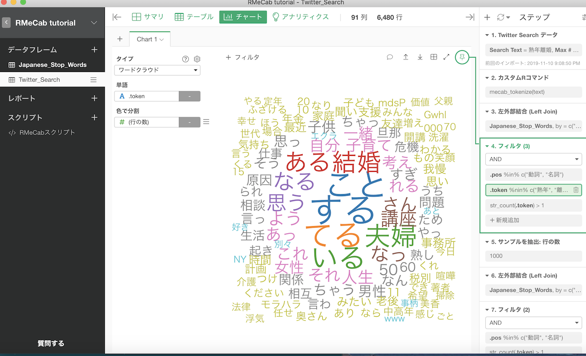

下記のサイトを参考に、Twitterデータをテキストマイニングして可視化に挑戦してみる
https://exploratory.io/note/2ac8ae888097/9462315684068270
・ツイートをインポート
・名詞、動詞のみにし、不必要な単語や記号を減らす
・データをワードクラウドという図形にする
・不必要な英数字や単語（する、こと、ある）などを減らす

・完成？？？
・ExploratoryではTwitterからデータを取得するには課金してアップグレードする必要がある（30日間は無料トライアル）
・一年のデータを取得することができた。